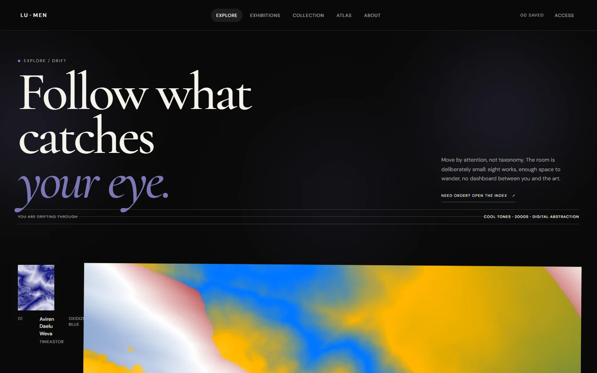

CREATIVE & EXPERIMENTAL
Lumen
Explore artworks through visual and thematic relationships, moving between discovery modes and a relationship atlas.

A museum for exploratory discovery
Lumen is an experimental digital museum prototype. My scope spans art direction, discovery patterns, motion and implementation.
Open paths beyond the search box
A visitor can arrive curious without a specific artist or term in mind. Lumen offers entry points through color, mood and connections between works.
Visitors with different exploration styles
The experience supports visitors who want to drift, people who prefer a browseable grid and people following a curatorial thread. The prototype uses a curated sample collection.
Reference research and design documents
The source provides open-source reference research, composition studies, IA and flows, accessibility evaluation and a verification plan.
Discovery IA and flows ↗ · Composition proofs ↗ · Verification plan ↗
Several entrances into one collection
Artwork Portal links to Drift, Grid, Color and Mood. Artwork detail connects to the Relationship Atlas, saved collection and exhibition paths.
Follow a relationship
Start drifting → open a work → inspect the context and related works → move into the Atlas or save an artwork.
Keep exploration reversible
Visitors can enter through multiple modes, return to a collection view or inspect a relationship. A grid and reduced-motion paths support a more direct way to browse.
Composition and discovery iterations
The repository records composition proofs and discovery-mode decisions. The current capture shows the implemented Drift experience.
An invitation to explore
The Drift view combines strong typography with artwork-led discovery.
Responsive and motion alternatives
The prototype includes reduced-motion alternatives and multiple discovery modes. The browser preview keeps the primary exploration entry visible on mobile.
Browser verification and artifacts
The live entry is implemented and the source publishes a verification plan. The prototype is available through GitHub Pages.
Result and next steps
The project demonstrates art direction and exploratory IA with a curated collection. A study could compare how visitors use Drift, Grid and the Atlas to understand relationships.